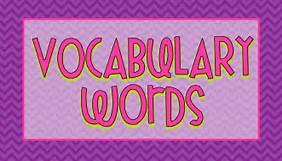

Home
Portfolio
Vocabulary
About Me
This is my Vocabulary Page!

- Sprites- A graphics object that can be moved on top of or behind a background.
- Script- A set of instructions. In Scratch a script is a single stack of blocks belonging to one sprite or to the stage.
- Iteration-Repeating a step-by-step procedure several times; also used to refer to single execution of that repetitive procedure.
- Integrated Development Environment (IDE)-Provides a developer with a way to create a program, run the program, and debug the program all within one application.
- Boolean Expression-Evaluates to either true or false; used in the conditional of an if-structure.
- Execute-To run a program or a single instruction.
- Bug-Part of a program that causes an error or undesired output.
- Debugging-The process of figuring out why code doesn't behave as expected and eliminating bugs to make it work as desired.
- Central Processing Unit (CPU, or core)-The part of the computer that executes one instruction at a time.